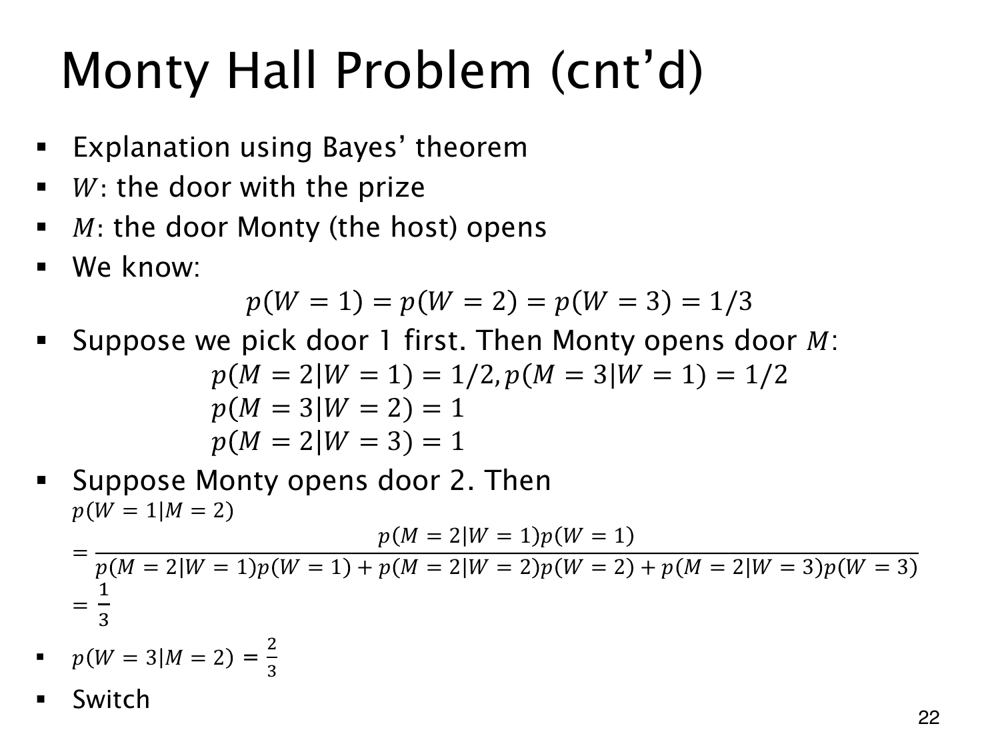

L1.10 · 第 22 页讲解原文
查看这一页课件

已知主持人开门 2
W 记奖品门，M 记主持人开的门，初选仍为门 1，先验各为 1/3。开门规则给出下表；零项来自主持人绝不打开有奖品的门。
| 奖品位置 | p(M=2∣W) | p(M=3∣W) |
|---|---|---|
| 门 1 | 1/2 | 1/2 |
| 门 2 | 0 | 1 |
| 门 3 | 1 | 0 |
观察到 M=2，先求总概率：
p(M=2)=2131+031+131=21.
再求两个闭门的后验：
p(W=1∣M=2)=1/2(1/2)(1/3)=31,
p(W=3∣M=2)=1/21(1/3)=32.
门 2 已展示羊，后验为 0，三项合为 1，所以应换到门 3。
开门 2 对门 3 的支持更强：奖品在门 3 时，主持人必须开 2；奖品在门 1 时，他只有一半机会开 2。这两个不同的似然经 Bayes 公式重新分配了概率。